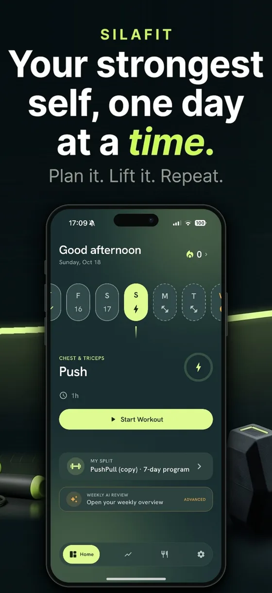
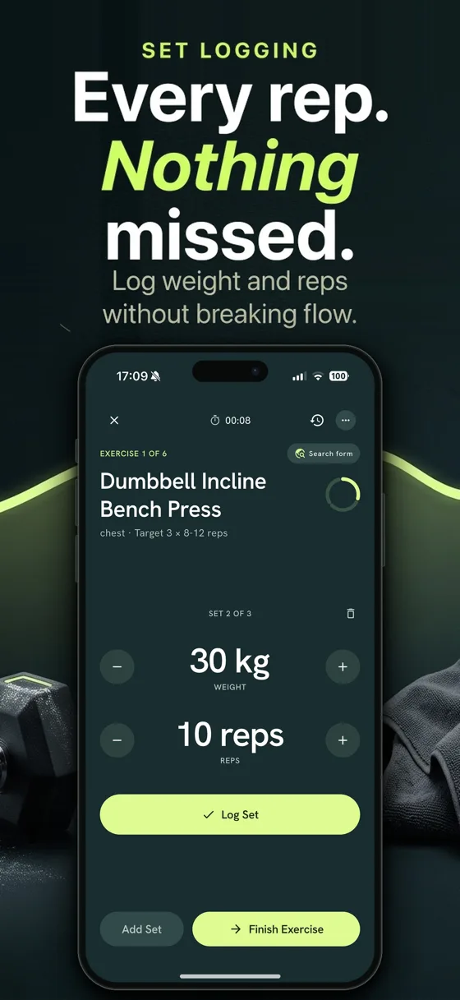
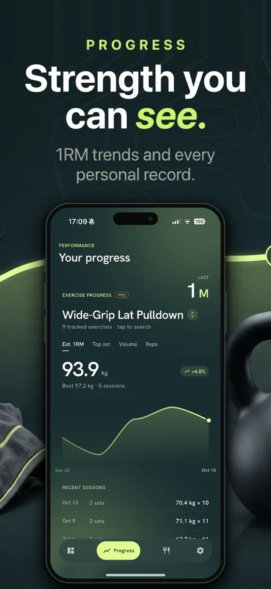
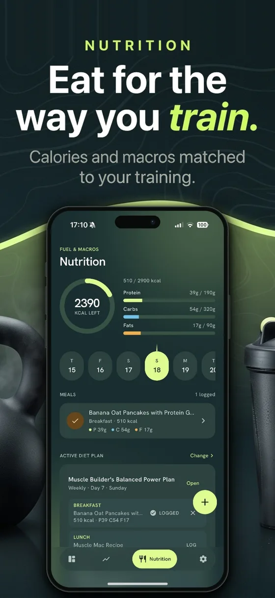
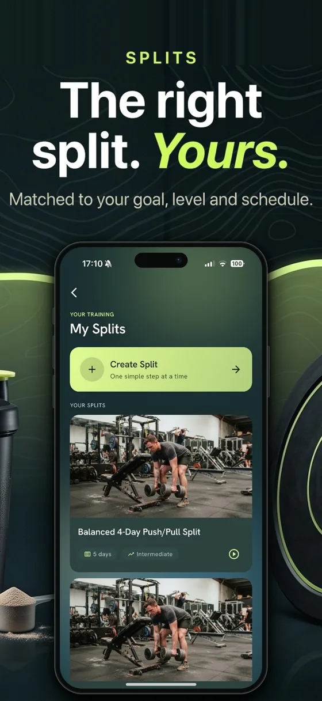
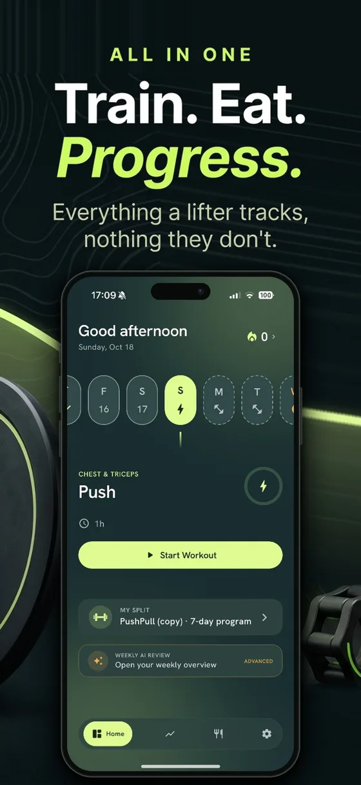

Тренинг + исхрана
Сила, мерена до секое повторување.

Запиши ја секоја серија, следи проверен сплит и јади според својата цел. Тренинзи, лични рекорди, планови за исхрана и макроа во една апликација.
Преземи одApp Store
Бесплатно на iPhone · Android наскоро
Погледни ја апликацијата
Тековна низа
112 дена
- П
- В
- С
- Ч
- П
- С
- Н
Деновите за одмор се бројат. И опоравокот е тренинг.

0
Вежби во библиотеката
0
Готови сплитови за тренинг
0
Рецепти од вистинска храна
Во апликацијата
Направено за теретана, не за табели.

Денес
Запишување серии
Напредок и рекорди
Исхрана
Сплитови
Сè на едно место
Твојот следен рекорд е веќе на кривата.
уште едно повторување. па следниот рекорд.

Преземи одApp Store
Бесплатен пакет засекогаш. Без картичка.
Скенирај со камерата на телефонот за да ја преземеш